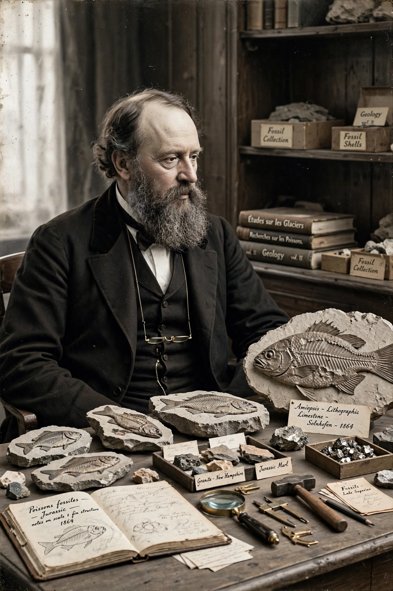

| Louis Agassiz | |
|---|---|
| Born | May 28, 1807, Môtier, Switzerland |
| Died | December 14, 1873 (aged 66), Cambridge, Massachusetts, U.S. |
| Nationality | Swiss, American |
| Fields | Palaeontology, glaciology, geology, natural history |
| Institutions | University of Neuchâtel, Harvard University |
| Known for | Ice age theory, fossil fish classification, polygenism |
Jean Louis Rodolphe Agassiz (May 28, 1807 – December 14, 1873) was a Swiss-born American biologist and geologist recognised as an innovative and prodigious scholar of Earth's natural history. He trained as a physician and became professor of natural history at the University of Neuchâtel before emigrating to the United States in 1847, where he became professor at Harvard and founded its Museum of Comparative Zoology in 1859.

Agassiz first won fame with his monumental Recherches sur les poissons fossiles (1833–1843), describing more than a thousand species of fossil fish and establishing a classification based on scale structure. The work earned him the Wollaston Medal of the Geological Society of London.
In 1837 Agassiz proposed that large parts of Europe had once been covered by great ice sheets — the theory of the ice age. His Études sur les glaciers (1840), based on fieldwork on the Unteraar Glacier in the Swiss Alps with a hut built on the ice (the "Hôtel des Neuchâtelois"), marshalled evidence from erratic boulders, polished rock surfaces and moraines. Though initially controversial and anticipated in part by Jean de Charpentier and Karl Schimper, Agassiz became the theory's most effective champion, extending it to North and South America. See also Interglacial.
At Harvard, Agassiz became the most famous scientist in America, a charismatic lecturer and tireless fundraiser. He led expeditions to Brazil (1865–66) and on the Hassler voyage through the Strait of Magellan to California (1871–72), and founded a summer school of natural history on Penikese Island in 1873, a forerunner of the Woods Hole Marine Biological Laboratory.
Agassiz was the most prominent scientific opponent of Charles Darwin's theory of evolution, maintaining to his death that species were immutable creations. He was also a leading proponent of polygenism — the theory that human races were separately created species — which was used by defenders of slavery and is now regarded as scientific racism. His legacy is therefore contested: foundational contributions to glaciology and palaeontology stand alongside views that have been repudiated. A glacier, a lake (prehistoric Lake Agassiz), a lunar crater and numerous species bear his name, though some institutions have reconsidered honours named for him in recent years.